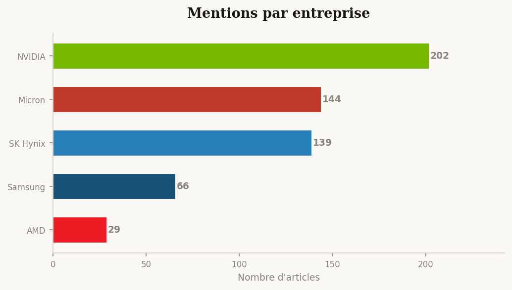
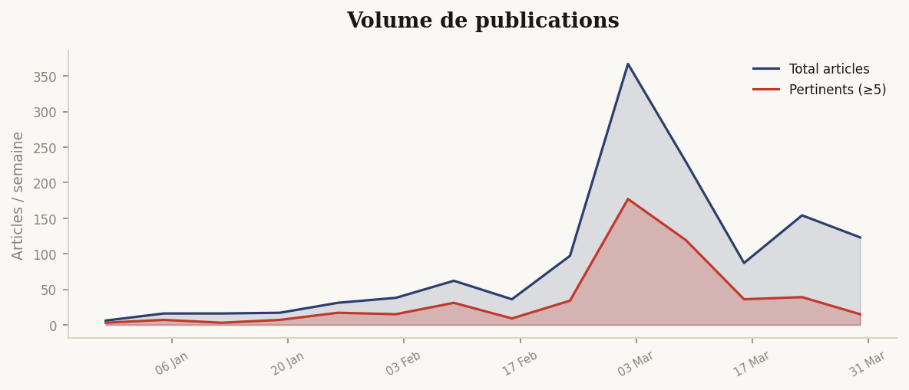

Infographies
Graphiques générés par Python à partir des données collectées


Graphique non disponible
Graphique non disponibleAnalyse générée par IA à partir des articles collectés — tendances, répartitions et points clés

Graphique non disponible
Graphique non disponible